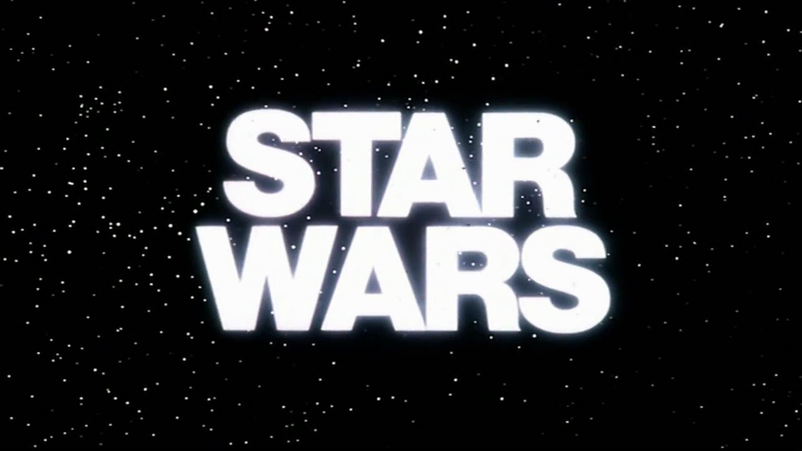

Episodio IV: Una nueva esperanza (1977)
Ganó 6 Premios Oscar:
Mejor dirección artística
Mejores efectos visuales
Mejor montaje
Mejor sonido
Mejor música original (John Williams)
Premio especial a los efectos sonoros (Ben Burtt)
Nominada a 4 Oscars más, incluyendo Mejor Película y Mejor Director.
Globos de Oro: Ganó Mejor música original
BAFTA: Ganó por sonido y diseño de producción
Episodio V: El imperio contraataca (1980)
Ganó 2 Oscars:
Mejor sonido
Premio especial a los efectos visuales
BAFTA: Ganó 2 (Música y diseño de producción)
Globos de Oro: Nominada por mejor música
Episodio VI: El regreso del Jedi (1983)
Ganó 1 Oscar especial por efectos visuales
Nominada a 3 Oscars más (Música, sonido, mezcla de sonido)
BAFTA: Ganó 1 (Mejores efectos visuales)
Episodio I: La amenaza fantasma (1999)
Nominada a 3 Oscars:
Mejor sonido
Mejores efectos visuales
Mejor montaje de sonido
Episodio II: El ataque de los clones (2002)
Nominada a 1 Oscar:
Mejores efectos visuales
Episodio III: La venganza de los Sith (2005)
Nominada a 1 Oscar:
Mejor maquillaje
Aunque las precuelas fueron innovadoras técnicamente, no fueron tan reconocidas como la trilogía original debido a críticas mixtas.
Episodio VII: El despertar de la Fuerza (2015)
Nominada a 5 Oscars:
Mejor montaje
Mejor música original
Mejores efectos visuales
Mejor sonido
Mejor mezcla de sonido
Episodio VIII: Los últimos Jedi (2017)
Nominada a 4 Oscars:
Mejor música original
Mejores efectos visuales
Mejor sonido
Mejor mezcla de sonido
Episodio IX: El ascenso de Skywalker (2019)
Nominada a 3 Oscars:
Mejor música original
Mejores efectos visuales
Mejor sonido
CURIOSIDADES
George Lucas se inspiró en samuráis, westerns y mitología
Yoda está basado en sabios orientales, y la estructura de la saga sigue la del héroe mítico según Joseph Campbell.
El nombre original de Luke era... Starkiller
En los primeros borradores se llamaba "Luke Starkiller". ¡El apellido cambió por sonar demasiado agresivo!
Los actores no sabían todo el guion
Mark Hamill (Luke) fue uno de los pocos que conocía el famoso giro de "Yo soy tu padre" antes del estreno.
"BB-8" fue nombrado así por su forma
Lucasfilm dijo que parecía el número “8” y “bola”, de ahí su simpático nombre.
Yoda casi fue interpretado por un mono con bastón y máscara
Antes de elegir la marioneta y a Frank Oz, ¡iban a usar un mono real disfrazado!